Introduction
BOSH is an effective way to manage your infrastructure and Azure is a great infrastructure to manage, but before you have a BOSH director, you need to bootstrap Azure to a point where you can deploy a BOSH Director to it. Namely, we need an Azure app registration to use as an automation account, a properly configured virtual network, and a virtual machine inside the network from which we can deploy the BOSH director.
Getting Azure Situated
Creating an App Registration
Both Terraform and BOSH perform tasks without user input, and therefore they require an automation account that can access the resources they need to manipulate. Azure implements these in the form of what they call App Registrations. In order to create one, you will need access to create accounts in Azure Active Directory; if you do not have this access, you will need to have somebody create the App Registration for you.
Once logged in, navigate to the Azure Active Directory on your sidebar.
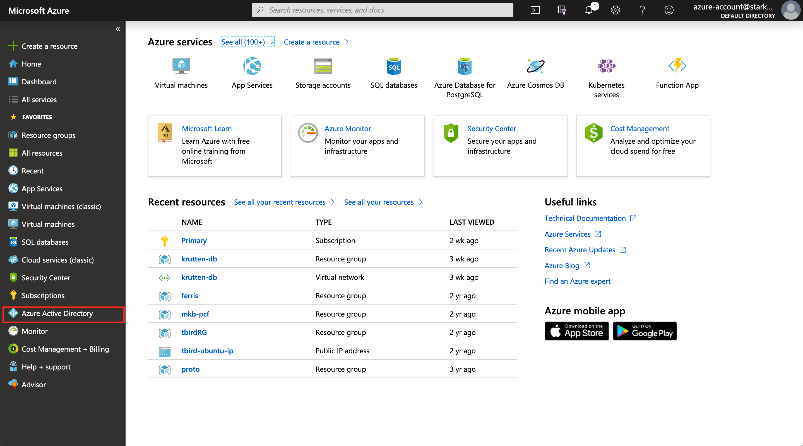
This presents a new sidebar, on which you should navigate to App
registrations. This will open up yet another bar - this time a horizontal
one - and you should click on New registration therein.
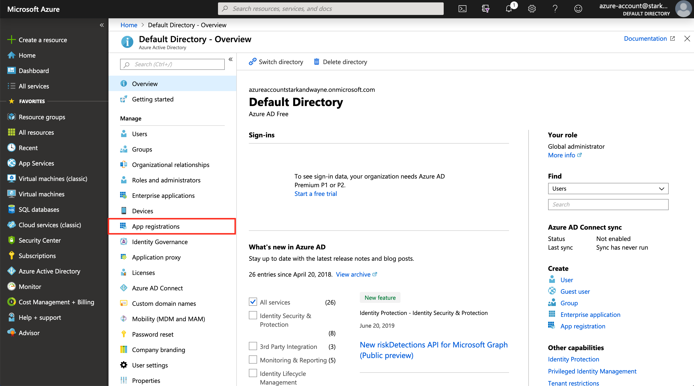
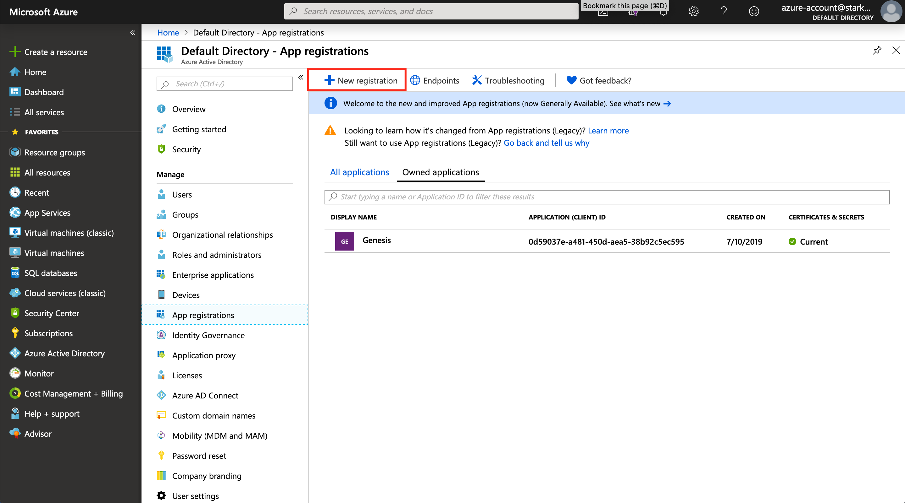
Azure will ask you to provide a display name for the application, the
account type, and a redirect URI. The display name can be whatever you want
it to be. The account type will almost always be set to Accounts in this
organizational directory only, and the redirect URI can be left blank for
our use cases. The Redirect URI type can be set to web.

Putting Together Your Service Principal
If you created the app registration in the steps above, you should be brought to the app's overview page. Should you find yourself not on this page, you can click on your new app in the list of app registrations in the Azure Active Directory panel to go there.
To authenticate as an application, we will need to collect a few data fields that, combined, Azure refers to as a "service principal". These include the following:
- Application ID
- Tenant ID
- Client Secret
All of these can be gathered from the app registration's page. This overview landing page contains the application ID and tenant ID, so take note of them for now.

When an app registration is first created, it does not have any client
secrets, so we'll need to create one. Navigate to Certificates & secrets
on this pages sidebar, and then open up the creation form by clicking on
"New Client Secret". Fill in the form by setting the expiry to something
you're comfortable with. Once the form is submitted, take the client secret
that gets generated and output and note that down alongside your application
ID and Tenant ID.
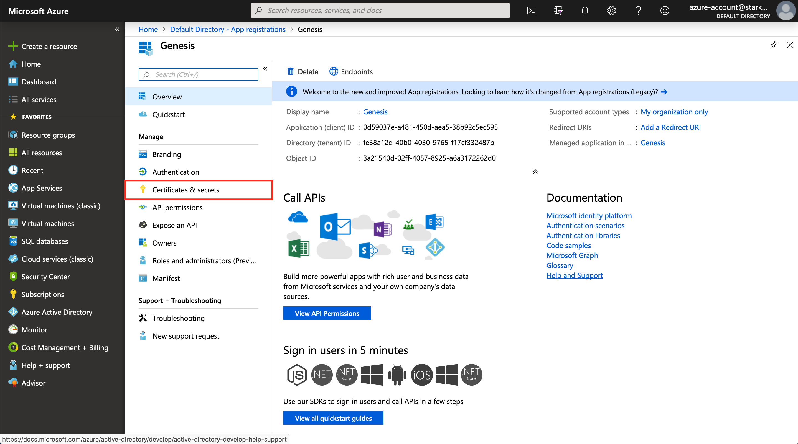
 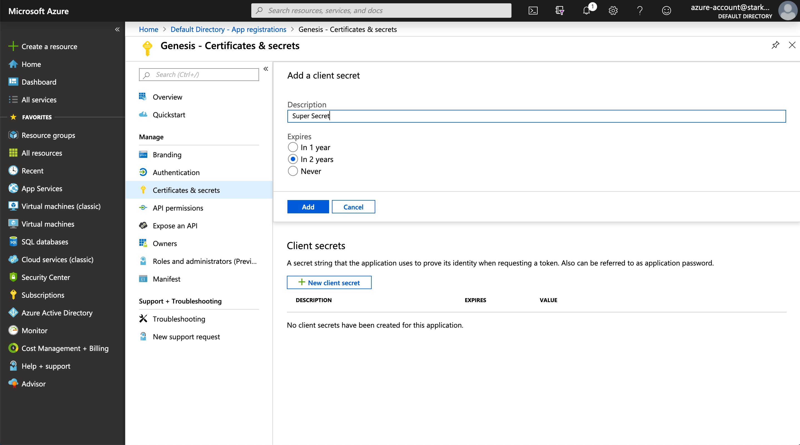
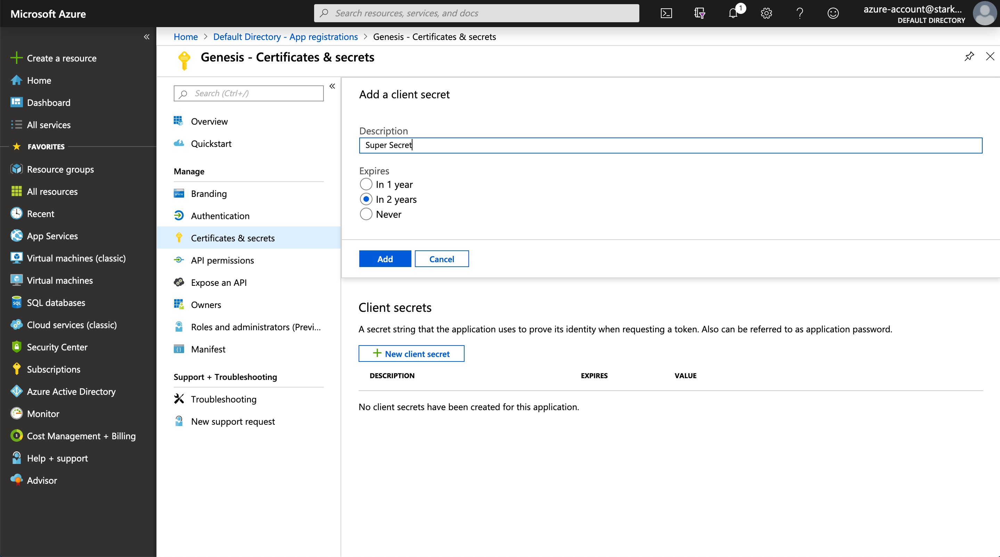
Getting Your Subscription ID
We will also need the ID of the subscription that resources will be created in
(and billed to). To find the ID, search Subscriptions in the top bar, go to
the list of subscriptions and select the desired subscription from the list.
Copy the ID and note it down.
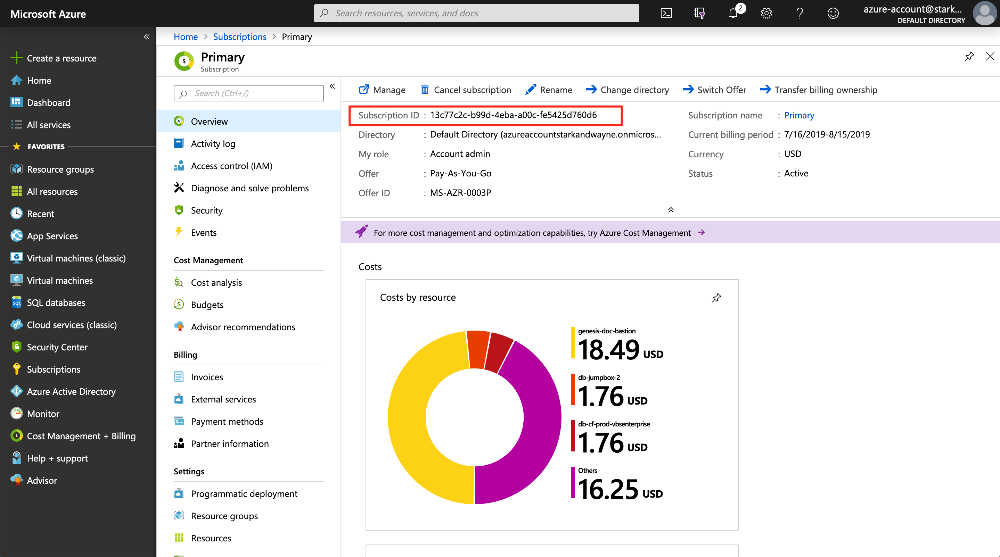
Granting Your App Registration Access to the Subscription
From the subscription's overview page, you can give the application you
created access to create and manipulate resources in the target
subscription. To do so, click on Access Control (IAM) on the sidebar, and
then on Add a role assignment. Search for and select the name of the
application you previously created, and give it the role of Contributor.
 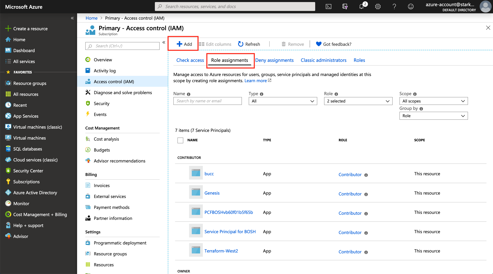
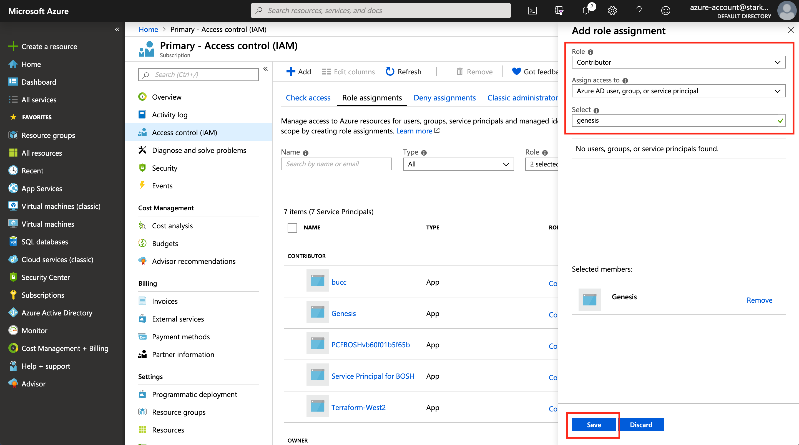
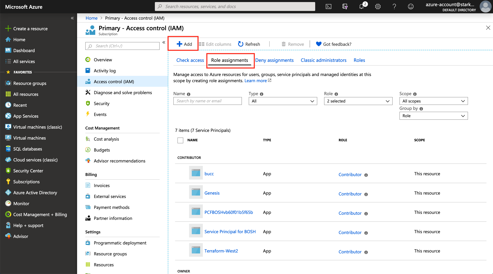
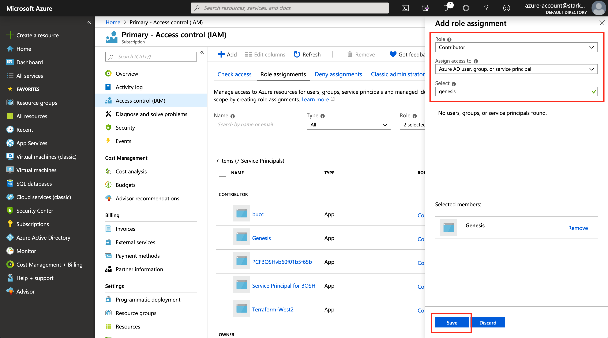
Setting up Terraform
Now that we have automation credentials, we can start standing up infrastructure using Terraform. Terraform binaries and documentation can be found at https://terraform.io.
We've already made a basic Terraform file for you that can stand up your control plane if given a few extra parameters. You can set up your working directory for terraform as follows:
``` ~/work/repos → git clone git@github.com:genesis-community/terraforms.git Cloning into 'terraforms'... remote: Enumerating objects: 26, done. remote: Counting objects: 100% (26/26), done. remote: Compressing objects: 100% (18/18), done. remote: Total 113 (delta 7), reused 23 (delta 4), pack-reused 87 Receiving objects: 100% (113/113), 1.38 MiB | 3.32 MiB/s, done. Resolving deltas: 100% (41/41), done. ~/work/repos → mkdir terraform-work ~/work/repos → cp terraforms/controlplane/azure/azure.tf terraform-work/ ~/work/repos → cp terraforms/controlplane/azure/terraform.tfvars.example terraform-work/terraform.tfvars ~/work/repos → cd terraform-work/ ~/work/repos/terraform-work → terraform init
Initializing the backend...
Initializing provider plugins... - Checking for available provider plugins... - Downloading plugin for provider "azurerm" (terraform-providers/azurerm) 1.32.1...
The following providers do not have any version constraints in configuration, so the latest version was installed.
To prevent automatic upgrades to new major versions that may contain breaking changes, it is recommended to add version = "..." constraints to the corresponding provider blocks in configuration, with the constraint strings suggested below.
- provider.azurerm: version = "~> 1.32"
Terraform has been successfully initialized!
You may now begin working with Terraform. Try running "terraform plan" to see any changes that are required for your infrastructure. All Terraform commands should now work.
If you ever set or change modules or backend configuration for Terraform, rerun this command to reinitialize your working directory. If you forget, other commands will detect it and remind you to do so if necessary. ```
Input variables for this deployment can be provided by putting their values
into the terraform.tfvars file. Minimally, you'll need to edit the
subscription_id, tenant_id, client_id, and client_secret.
These are all values you should have taken note earlier during the app
registration steps.
Once configured, run terraform apply from the directory with your azure.tf and
terraform.tfvars file.
``` ~/work/repos/terraform-work → pwd /Users/tom/work/repos/terraform-work ~/work/repos/terraform-work → terraform apply
An execution plan has been generated and is shown below. Resource actions are indicated with the following symbols: + create
Terraform will perform the following actions:
# azurermapplicationsecuritygroup.bastion will be created + resource "azurermapplicationsecuritygroup" "bastion" { + id = (known after apply) + location = "eastus" + name = "genesis-bastion-asg" + resourcegroupname = "genesis" + tags = (known after apply) }
# azurermmanageddisk.bastion-data will be created + resource "azurermmanageddisk" "bastion-data" { + createoption = "Empty" + disksizegb = 50 + id = (known after apply) + location = "eastus" + name = "genesis-bastion-data-disk" + resourcegroupname = "genesis" + sourceuri = (known after apply) + storageaccounttype = "Standard_LRS" + tags = (known after apply) }
# azurermnetworkinterface.bastion will be created + resource "azurermnetworkinterface" "bastion" { + applieddnsservers = (known after apply) + dnsservers = (known after apply) + enableacceleratednetworking = false + enableipforwarding = false + id = (known after apply) + internaldnsnamelabel = (known after apply) + internalfqdn = (known after apply) + location = "eastus" + macaddress = (known after apply) + name = "genesis-bastion" + networksecuritygroupid = (known after apply) + privateipaddress = (known after apply) + privateipaddresses = (known after apply) + resourcegroupname = "genesis" + tags = (known after apply) + virtualmachine_id = (known after apply)
+ ip_configuration {
+ application_gateway_backend_address_pools_ids = (known after apply)
+ application_security_group_ids = (known after apply)
+ load_balancer_backend_address_pools_ids = (known after apply)
+ load_balancer_inbound_nat_rules_ids = (known after apply)
+ name = "ipconfig1"
+ primary = (known after apply)
+ private_ip_address = "10.0.0.4"
+ private_ip_address_allocation = "static"
+ private_ip_address_version = "IPv4"
+ public_ip_address_id = (known after apply)
+ subnet_id = (known after apply)
}
}
# azurermnetworkinterfaceapplicationsecuritygroupassociation.bastion-asg-nic will be created + resource "azurermnetworkinterfaceapplicationsecuritygroupassociation" "bastion-asg-nic" { + applicationsecuritygroupid = (known after apply) + id = (known after apply) + ipconfigurationname = "ipconfig1" + networkinterface_id = (known after apply) }
# azurermnetworksecuritygroup.controlplane will be created + resource "azurermnetworksecuritygroup" "controlplane" { + id = (known after apply) + location = "eastus" + name = "genesis-sg" + resourcegroupname = "genesis" + security_rule = (known after apply) + tags = (known after apply) }
# azurermnetworksecurityrule.allow-bastion-access will be created + resource "azurermnetworksecurityrule" "allow-bastion-access" { + access = "Allow" + destinationapplicationsecuritygroupids = (known after apply) + destinationportrange = "22" + direction = "Inbound" + id = (known after apply) + name = "allow-bastion-access" + networksecuritygroupname = "genesis-sg" + priority = 100 + protocol = "TCP" + resourcegroupname = "genesis" + sourceaddressprefix = "*" + sourceport_range = "*" }
# azurermpublicip.bastion will be created + resource "azurermpublicip" "bastion" { + allocationmethod = "Static" + fqdn = (known after apply) + id = (known after apply) + idletimeoutinminutes = 4 + ipaddress = (known after apply) + ipversion = "IPv4" + location = "eastus" + name = "genesis-bastion-public-ip" + publicipaddressallocation = (known after apply) + resourcegroup_name = "genesis" + sku = "Basic" + tags = (known after apply) }
# azurermresourcegroup.rg will be created + resource "azurermresourcegroup" "rg" { + id = (known after apply) + location = "eastus" + name = "genesis" + tags = (known after apply) }
# azurermsubnet.controlplane will be created + resource "azurermsubnet" "controlplane" { + addressprefix = "10.0.0.0/24" + id = (known after apply) + ipconfigurations = (known after apply) + name = "genesis-controlplane-subnet" + networksecuritygroupid = (known after apply) + resourcegroupname = "genesis" + virtualnetwork_name = "genesis-network" }
# azurermsubnetnetworksecuritygroupassociation.controlplane will be created + resource "azurermsubnetnetworksecuritygroupassociation" "controlplane" { + id = (known after apply) + networksecuritygroupid = (known after apply) + subnetid = (known after apply) }
# azurermvirtualmachine.bastion will be created + resource "azurermvirtualmachine" "bastion" { + availabilitysetid = (known after apply) + deletedatadisksontermination = false + deleteosdiskontermination = true + id = (known after apply) + licensetype = (known after apply) + location = "eastus" + name = "genesis-bastion" + networkinterfaceids = (known after apply) + resourcegroupname = "genesis" + tags = (known after apply) + vmsize = "StandardA2v2"
+ identity {
+ identity_ids = (known after apply)
+ principal_id = (known after apply)
+ type = (known after apply)
}
+ os_profile {
+ admin_username = "ubuntu"
+ admin_password = (sensitive value)
+ computer_name = "bastion"
+ custom_data = (known after apply)
}
+ os_profile_linux_config {
+ disable_password_authentication = false
}
+ storage_data_disk {
+ caching = (known after apply)
+ create_option = "Attach"
+ disk_size_gb = 50
+ lun = 0
+ managed_disk_id = (known after apply)
+ managed_disk_type = (known after apply)
+ name = "genesis-bastion-data-disk"
+ write_accelerator_enabled = false
}
+ storage_image_reference {
+ offer = "UbuntuServer"
+ publisher = "Canonical"
+ sku = "18.04-LTS"
+ version = "latest"
}
+ storage_os_disk {
+ caching = "ReadWrite"
+ create_option = "FromImage"
+ disk_size_gb = (known after apply)
+ managed_disk_id = (known after apply)
+ managed_disk_type = "Standard_LRS"
+ name = "genesis-bastion-os-disk"
+ os_type = "Linux"
+ write_accelerator_enabled = false
}
}
# azurermvirtualnetwork.network will be created + resource "azurermvirtualnetwork" "network" { + addressspace = [ + "10.0.0.0/16", ] + dnsservers = [ + "1.1.1.1", + "1.0.0.1", ] + id = (known after apply) + location = "eastus" + name = "genesis-network" + resourcegroupname = "genesis" + tags = (known after apply)
+ subnet {
+ address_prefix = (known after apply)
+ id = (known after apply)
+ name = (known after apply)
+ security_group = (known after apply)
}
}
# randomstring.bastionpassword will be created + resource "randomstring" "bastionpassword" { + id = (known after apply) + length = 32 + lower = true + minlower = 0 + minnumeric = 0 + minspecial = 0 + minupper = 0 + number = true + result = (known after apply) + special = false + upper = true }
Plan: 13 to add, 0 to change, 0 to destroy.
Do you want to perform these actions? Terraform will perform the actions described above. Only 'yes' will be accepted to approve.
Enter a value: yes
... many creation lines ...
Apply complete! Resources: 12 added, 0 changed, 0 destroyed.
Outputs:
bastion-box-ip-address = 13.82.181.177 bastion-box-username = ubuntu bastion-box-password = abCdEfGhiJKLmnoPqRStUvWXyz123456 dns-servers = [ "1.1.1.1", "1.0.0.1", ] network-security-group-name = genesis-sg recommended-BOSH-director-IP = 10.0.0.5 resource-group-name = genesis subnet-CIDR = 10.0.0.0/24 subnet-gateway = 10.0.0.1 subnet-name = genesis-controlplane-subnet virtual-network-name = genesis-network ```
Following this command, Terraform will have stood up a resource group, virtual network, network security groups, and most importantly, a bastion box virtual machine from which you can continue your work. The terraform script will additionally install various tools and libraries on the bastion box that Genesis, BOSH, and Cloud Foundry need.
You can see from the example output above (and similarly in your actual output) that some output variables are printed at the end of the apply. You will want to copy those output values somewhere for now, as they contain the answers to many of the questions that Genesis will ask you later.
Setting Up Your Bastion Host
Once your bastion box is created, you can ssh into it to begin working from it. The user, password, and ip address can be found in the terraform output variables.
``` ~/work/repos/terraform-work → ssh ubuntu@13.82.181.177 The authenticity of host '13.82.181.177 (13.82.181.177)' can't be established. ECDSA key fingerprint is SHA256:vvBs1voA6+R6fDyrPf0+YpH1go9HEv3ThxE4ionswR8. Are you sure you want to continue connecting (yes/no)? yes Warning: Permanently added '13.82.181.177' (ECDSA) to the list of known hosts. ubuntu@12.82.181.177's password: Welcome to Ubuntu 18.04.2 LTS (GNU/Linux 4.18.0-1024-azure x86_64)
- Documentation: https://help.ubuntu.com
- Management: https://landscape.canonical.com
Support: https://ubuntu.com/advantage
System information as of Mon Aug 12 16:00:30 UTC 2019
System load: 0.0 Processes: 121 Usage of /: 6.3% of 28.90GB Users logged in: 0 Memory usage: 10% IP address for eth0: 10.0.0.4 Swap usage: 0%
27 packages can be updated. 16 updates are security updates.
Last login: Mon Aug 12 15:44:03 2019 from 71.186.231.155 ```
Before proceeding, you will need to set up the basics of your Git config. Run the following with the proper values substituted:
git config --global user.name "YOURNAME"
git config --global user.email "YOUREMAIL"
Starting a Local Vault Instance
Genesis stores its secrets in Vault, a piece of software written by Hashicorp. Genesis has opinions about how the Vault should be organized, so it's not suggested to colocate the Genesis secret store on a pre-existing Vault.
We use the Safe CLI to interact with Vault in general. You should have it installed after after following the instructions on setting up your bastion host. We're going to use Safe to quickly set up a temporary local Vault instance that Genesis can use until we are able to set up a permanent Vault through BOSH at a later time.
To do this, open a separate shell session / tmux pane on the jumpbox and run
safe local --memory
Safe will output the target name of the new Vault, target it, and authenticate to it automatically.
Deploying a New Proto-BOSH
First, create a deployments directory in which to store your various
Genesis deployment folders. Then, change to that directory and initialize
a new Genesis deployment repository:
``` ubuntu@bastion:~$ mkdir ~/deployments ubuntu@bastion:~$ cd ~/deployments ubuntu@bastion:~/deployments$ genesis init bosh -k bosh
Select Vault:
1) inviolable-sanctuary (insecure) http://127.0.0.1:8201 (default)
Select choice > inviolable-sanctuary
Verifying availability of selected vault...ok
Downloading Genesis kit bosh (latest version)...
Initialized empty Genesis repository in ./bosh-deployments - using vault at http://127.0.0.1:8201 (insecure) - using the bosh/1.4.0 kit.
```
Genesis will prompt you at this point about which Vault
you would like to use. Select the target that was created by safe local.
cd into the newly created directory. Now we need to tell Genesis to
set up a new proto-BOSH director deployment. The genesis command that does
this is genesis new. Genesis new takes a positional argument which is the
name of the environment that you're creating the deployment in. We typically
recommend an org-site-env naming scheme. For the purpose of this
tutorial, we'll call ours test-eastus-controlplane. Once you run the
command, you'll be walked through a series of questions about the deployment
you're about to make. The answers to most of these questions were output at
the end of your terraform apply. Azure credential information can be found
in the terraform.tfvars file that you set up in your terraform-work
directory outside of the bastion box. An example of a successful genesis new
call is seen below.
``` ubuntu@bastion:~/deployments$ cd bosh-deployments ubuntu@bastion:~/deployments/bosh-deployments$ genesis new test-eastus-controlplane Setting up new environment test-eastus-controlplane...
Using vault at http://127.0.0.1:8201. Verifying availability...ok
Is this a proto-BOSH director? [y|n] > y
What static IP do you want to deploy this BOSH director on?
10.0.0.5
What network should this BOSH director exist in (in CIDR notation)?
10.0.0.0/24
What default gateway (IP address) should this BOSH director use?
10.0.0.1
What DNS servers should BOSH use? (leave value empty to end) 1st value > 1.1.1.1 2nd value > 1.0.0.1 3rd value >
What IaaS will this BOSH director orchestrate? 1) VMWare vSphere 2) Amazon Web Services 3) Microsoft Azure 4) Google Cloud Platform 5) OpenStack 6) BOSH Warden
Select choice > Microsoft Azure
What is your Azure Client ID?
01234567-89ab-cdef-0123-456789abcdef What is your Azure Client Secret? clientsecret [hidden]: clientsecret [confirm]:
What is your Azure Tenant ID?
01234567-89ab-cdef-0123-456789abcdef
What is your Azure Subscription ID?
01234567-89ab-cdef-0123-456789abcdef
What Azure Resource Group will BOSH be deploying VMs into?
genesis
What security group should be used as the BOSH default security group?
genesis-sg
What is the name of your Azure Virtual Network?
genesis-network
What is the name of the Azure subnet that the BOSH will be placed in?
genesis-controlplane-subnet
Would you like to edit the environment file? [y|n] > n - auto-generating credentials (in secret/test/eastus/controlplane/bosh)... - auto-generating certificates (in secret/test/eastus/controlplane/bosh)... New environment test-eastus-controlplane provisioned!
To deploy, run this:
genesis deploy 'test-eastus-controlplane'
```
The command will then spend some time generating certificates and secrets
for the deployment to use. These will get stored in the local Vault and made
accessible by the safe utility.
An environment file named after your environment name (e.g.
test-eastus-controlplane.yml) will be created. This contains non-sensitive
information about your deployment. It is safe to store this file in version
control. To deploy your newly-configured BOSH deployment, you can now run:
``` ubuntu@bastion:~/deployments$ genesis deploy test-eastus-controlplane Compiling package 'ruby-2.4-r4/0cdc60ed7fdb326e605479e9275346200af30a25'... Finished (00:05:47) Compiling package 'boshazurecpi/afc0bf467dd0d4489f757d788065ab4d4f977ce4'... Finished (00:01:55) Installing packages... Finished (00:00:01) Rendering job templates... Finished (00:00:01) Installing job 'azure_cpi'... Finished (00:00:00) Finished installing CPI (00:07:45)
Starting registry... Finished (00:00:00) Uploading stemcell 'bosh-azure-hyperv-ubuntu-xenial-go_agent/315.26'... Finished (00:02:24)
Started deploying Creating VM for instance 'bosh/0' from stemcell 'bosh-stemcell-90cb8ae1-9202-4555-8416-18fe08a1cb19'... Finished (00:02:20) Waiting for the agent on VM 'agentid:16d9e7ca-f62d-442c-43b2-9dd270517140;resourcegroupname:genesis' to be ready... Finished (00:01:00) Creating disk... Finished (00:00:13) Attaching disk 'caching:None;diskname:bosh-disk-data-612ab183-3042-4ec3-a077-e58a4e01ada8;resourcegroupname:genesis' to VM 'agentid:16d9e7ca-f62d-442c-43b2-9dd270517140;resourcegroupname:genesis'... Finished (00:01:07) Rendering job templates... Finished (00:00:36) Compiling package 'golang/b348840d6ee6de87fdd43e4792fdbe1af734039b'... Finished (00:00:49) Compiling package 'bpm-runc/cb758414ed267820880c6bf1ca57d7467c2d70bf'... Finished (00:02:02) Compiling package 'ruby-2.4-r5/726cbb2214e138b576700db6a30698edb2b994e2'... Finished (00:02:12) Compiling package 'mysql/de7350b5d6d835f758a62c0b3a8f07d3f0150d67abfa0da3967bd1127fada4c6'... Finished (00:00:47) Compiling package 'libpq/b3fead55dd7c9fa83be2412b24db84d2b04dbdb5dd0583ee7e9afddbb200659a'... Finished (00:00:23) Compiling package 'ruby-2.4-r4/0cdc60ed7fdb326e605479e9275346200af30a25'... Finished (00:02:05) Compiling package 'openjdk1.8.0/d2d85d44c6f0ee050ef1fb0149ce3da575234ad6'... Finished (00:00:12) Compiling package 'gonats/a32f561770ebdc422c2f9955c7614c23900b9edc62aec51a6b48adc636516802'... Finished (00:00:01) Compiling package 's3cli/4b6a4e65f277e1e4cdd9bfd8330de14ea28e9e5762a304f2d3a35f47958d7376'... Finished (00:00:01) Compiling package 'nginx/d9c13905876ac2bc3f62657048750257794ecc53121ad7cd92583d3ef292b8b8'... Finished (00:00:48) Compiling package 'bpm/d7c8de76cea8201f6cdf37d4f848b0a52c9c5798'... Finished (00:00:12) Compiling package 'uaautils/90097ea98715a560867052a2ff0916ec3460aabb'... Finished (00:00:00) Compiling package 'director/35121e0b2f3354dcfccbed5ea52ea2ccb14dd0d0b90cdd5c4be0787cbdd96ca6'... Finished (00:01:10) Compiling package 'boshazurecpi/afc0bf467dd0d4489f757d788065ab4d4f977ce4'... Finished (00:00:48) Compiling package 'uaa/58ad7562f1d34ad24256fff92b3a241f8e101a2a'... Finished (00:00:56) Compiling package 'postgres-9.4/ee3022bfae2cb7f7454aed9e28fe7715765b9a0086ef2045219f7a4e16baca81'... Finished (00:03:49) Compiling package 'bosh-gcscli/a03b1fc29fd357b8e3023193c87ae9ee49db052965efe5b3d9bff3538ed2df4b'... Finished (00:00:01) Compiling package 'registry/1d74c7cbca2216cdf7f51bc74eca2c831012dc25b5b53d66b3412042edb032ef'... Finished (00:00:50) Compiling package 'credhub/0481a83e36b6179f4fc9f28088c4cd2ac3aa870a'... Finished (00:00:23) Compiling package 'verifymultidigest/2405293bf44933ac48362d7e109fc38ea4469b962cf62715533ecca53c28bf7b'... Finished (00:00:01) Compiling package 'davcli/100c52066493ef0d766c464c9cdd811c902a555013543bd16b62cf59ba5c72eb'... Finished (00:00:01) Compiling package 'lunaclient/b922e045db5246ec742f0c4d1496844942d6167a'... Finished (00:00:03) Compiling package 'health_monitor/8f3a84d055a292d385f4f2f0df42ba25eb424ccff6a3854e1209668fec263295'... Finished (00:00:26) Updating instance 'bosh/0'... Finished (00:01:58) Waiting for instance 'bosh/0' to be running... Finished (00:02:34) Running the post-start scripts 'bosh/0'... Finished (00:00:02) Finished deploying (00:28:04)
Stopping registry... Finished (00:00:00) Cleaning up rendered CPI jobs... Finished (00:00:00)
Succeeded
test-eastus-controlplane BOSH Director deployed!
For details about the deployment, run
genesis info test-eastus-controlplane
To set up a named alias for this director, run
genesis do test-eastus-controlplane -- alias
To log into the BOSH director, as the admin user, run
genesis do test-eastus-controlplane -- login
If this is a new BOSH director, you can upload stemcells by running
genesis do test-eastus-controlplane -- upload-stemcells ```
To log in to the BOSH director, you should run:
genesis do test-eastus-controlplane -- login
Uploading Your Cloud Config
The BOSH cloud config contains shared information about all the deployments you'll be deploying to your control plane environment. This includes the network IP allocations, VM sizes, disk sizes, availability zone configurations, and compilation VM configuration.
The terraform script, as a part of its creation of the bastion host, has put
a cloud config file for you at $HOME/deployments/director-configs. All you
need to do is upload it.
First, make sure that you're logged into bosh. Then run
bosh -e test-eastus-controlplane update-cloud-config $HOME/deployments/director-configs/controlplane.yml
Now your cloud config should be uploaded and ready to go.